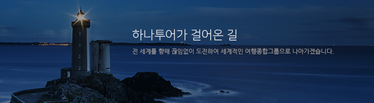

HOME > Company > 연혁
연혁
HanaTour history

2015~현재
- .01하나투어 박상환 대표이사 회장, 김진국 대표이사 사장 체제 출범
- .03한국능률협회컨설팅 선정 '2016 한국산업의 브랜드파워(K-BPI)' 및 브랜드스탁 선정
- 대한민국 브랜드스타' 여행사부문 12년 연속 1위 인증
- .04에스엠면세점, 인사동점 그랜드 오픈
- .06'티마크그랜드호텔명동' 개관
- 소비자중심경영(CCM) 재인증 획득 (2012~)
- .08한국능률협회컨설팅 선정, '2015 일하기 좋은 기업 대상(K-GWPI)' 여행사부문 5년 연속 선정
- .07한국경제신문, 한국소비자포럼 주관 '올해의 브랜드 대상' 여행사부문 9년 연속 선정
- .02여행산업 최초 유네스코한국위원회와 MOU,세계 유산 여행 상품 운영
- .03면세점 유통사업 진출(인천국제공항 중소중견구역 면세점사업자 낙찰)
- .04‘티마크 시티 삿포로’오픈
- .07에스엠면세점, 서울 시내 면세점 중소중견기업 운영자로 선정
- .08한국능률협회컨설팅 선정, '2015 일하기 좋은 기업 대상(K-GWPI)' 여행사부문 5년 연속 선정
- .11에스엠면세점, 인천공항점 그랜드 오픈
2010~2014
- .06에스엠면세점, 서울 시내 면세점 중소중견기업 운영자로 선정
- .09대한상공회의소, 포브스코리아 주최 '2014 사회공헌대상' 문화예술부문 명예의전당 수상
- .10문화공연티켓예매사이트 '하나프리티켓' 오픈
- .11여행정보무료서비스‘투어팁스' 정식 오픈
- 소비자중심경영(CCM) 재인증 획득 (2012~)
- .12하나Free 에어텔 앱, '스마트앱어워드 2014' 여행/관광분야 대상 수상
- .02여행테마카페 '뚜르 드 카페(Tour de Café)' 오픈
- .03여행정보무료서비스 '투어팁스' 정식 오픈
- .08문화공연티켓예매사이트 '하나프리티켓' 오픈
- .09박상환 대표이사 회장, <제 40회 관광의 날 관광진흥유공 금탑산업훈장> 수상
- .10하나투어 2호 호텔, '티마크호텔명동' 개관
- .11하나투어 1호 호텔, ‘센터마크호텔’ 개관
- .07하나투어, 모두투어 합작법인 '호텔앤에어닷컴' 설립
- .11코스피(유가증권시장) 이전 상장
- 대한상공회의소, 중앙일보 주최 '제18 회 기업혁신대상' 국무총리상수상
- TTG 트래블어워즈 최고의 여행사상 수상
- .04하나벤처 2호 'H&T 마케팅' 출범
1993~2009
- .02문화관광부 주관 우수여행상품으로 하나투어 국내여행상품브랜드 '내나라여행' 선정
- .10하나벤처 1호 '하나투어샵' 출범
- .03납세자의 날 기념 '모범납세자' 산업포창 수상
- .11'하나투어 마일리지 클럽' KB카드 출시
- .04납세자의 날 기념 '모범납세자' 재정경제부 장관 표창
- .11코스닥 상장사 최초 런던증권거래소 상장
- .11업계 최초 코스닥 상장
- .03㈜하나투어로 상호 변경
- .12'하나투어' 브랜드 개발
- .11㈜국진여행사 창립